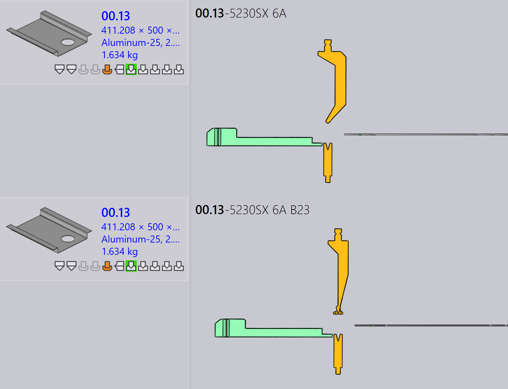
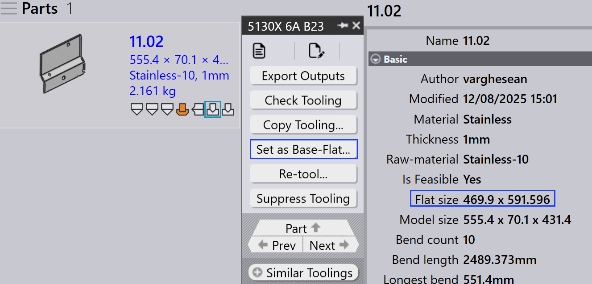
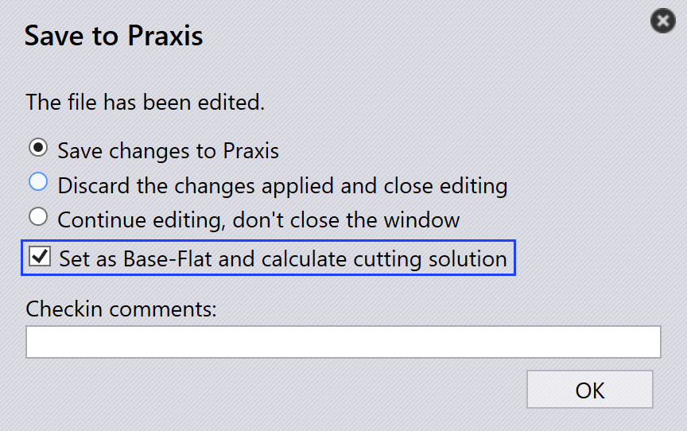
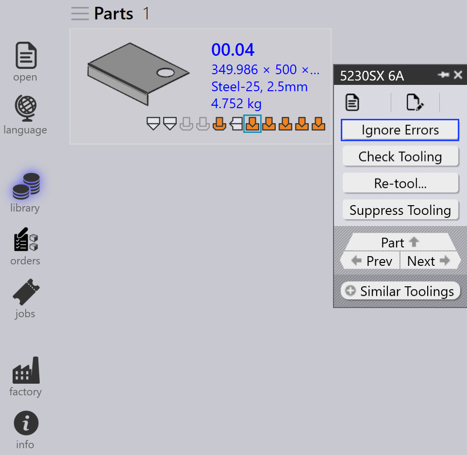

Tooling panel
This section explains tooling-related actions such as Exportar salidas, Check Tooling, Ignorar utillaje, Establecer como base plana…, Copiar utillaje…, and other options used to manage tooling instances.

|
|


Exportar salidas
This option exports the part output to the destination configured in Ajustes de fábrica. (See Bend Settings and Cut Settings)

Only the toolings associated with the selected tooling operation are exported, not the entire part.
| The exported files depend on the operation type. For Bend and Fold operations, NC files and reports are generated. For Cut and Punch operations, only the part files are exported. |
Check Tooling
-
If there is a change in CAM Settings or a bend tool is lost, you don’t need to Re-tool the part.
-
Instead, use Check Tooling to validate the existing tooling without making any changes.
-
If the validation fails, the tooling status of that instance is updated, and the related output files are removed.
-
Check Tooling also detects parts where errors were previously manually overridden using Ignorar errores, and updates their status to error if needed.

Copiar utillaje…
The copy tooling allows you to quickly apply bend tooling from one solution to others, saving time and effort.
This copies the punch, sequence, and back gauge setup from a selected reference tooling (solution) and tries to apply the same settings to all other solutions.
-
If the copied setup is feasible for a target machine, it is saved and used.
-
If the setup is not feasible, the original tooling for that machine remains unchanged.
For example, you may have different tooling for different machines:
-
Here, Machine 5230SX 6A uses a Gooseneck punch, Machine 5085X 6A B23 uses a Pointed punch.

When you use the Copiar utillaje… on Machine 5230SX 6A, it tries to copy the Gooseneck setup to all other machines.

The same punch, sequence, and back gauge settings are applied wherever possible. If the copied setup cannot be used, the original tooling stays unchanged.

After applying copy tooling, the Gooseneck setup has been successfully applied to all other machines where it is feasible.
Establecer como base plana…
The Establecer como base plana… feature defines which bend or fold tooling is used as the reference flat size for generating cutting solutions. When a tooling is marked as Base-Flat, TruSmartCAM updates the part’s flat size based on that machine and regenerates cutting solutions accordingly. Base-Flat toolings are shown with a blue border in the UI.
Different bend machines may produce slight variations in flat size for the same part. When you set a tooling as the Base-Flat, TruSmartCAM uses that machine’s flat size as the master reference and automatically recalculates the cutting solutions.
Here, we can see different flat sizes for the same part across various machines:

In this example, the 5130X 6A B23 tooling is set as the Base-Flat, and the updated flat size is applied in the part properties:

Automatic base flat selection
When the factory setting Aplicar corrección plana durante el plegado is enabled:

-
TruSmartCAM automatically sets the bend tooling (that contains the max bend length table) as the Base-Flat during part import.
-
If the selected bend tooling encounters an error or is not feasible, TruSmartCAM intelligently switches and sets another valid bend tooling as the Base-Flat. This ensures the flat size reference and cutting solutions always remain consistent and valid without manual intervention.
Enhanced base flat management
TruSmartCAM provides Base-Flat options in the Guardar en Praxis dialog when saving bend or fold tooling edits. These options appear only for toolings in the OK state and ensure that flat size and cutting solutions stay accurate.
Establecer como base plana y calcular programa de corte
This option is used to mark a tooling as Base-Flat for the first time and automatically generate the corresponding cutting solution.
Appears when:
-
The tooling is not currently marked as Base-Flat.
-
The user has checked out the tooling for editing and is saving the changes.

To use this option, check out the bend or fold tooling and make the required modifications, such as changes to bend parameters or flat size. Press Ctrl+S to save the changes. In the Guardar en Praxis dialog, choose Establecer como base plana y calcular programa de corte and click OK. TruSmartCAM will set the tooling as the Base-Flat and generate the cutting solution using the updated flat size.
Actualizar la base plana y recalcular programa de corte
This option is used when the tooling is already marked as Base-Flat and has been edited, requiring the flat size and cutting solutions to be regenerated.
Appears when:
-
The tooling is already marked as Base-Flat.
-
The user has checked it out, edited it, and is saving the changes.

When editing the existing Base-Flat tooling, update the bend parameters or flat-size geometry as needed. In the Guardar en Praxis dialog, choose Actualizar la base plana y recalcular programa de corte. TruSmartCAM will then update the Base-Flat tooling and regenerate all related cutting solutions to reflect the latest changes.
|
Only one bend tooling can be set as the Base-Flat at a time. When the Base-Flat is changed, existing cutting solutions are automatically reprocessed. This feature is available for both bend and fold toolings within TruSmartCAM. |
Reutillaje…
This option reprocesses the selected tooling for the part.
Right-click the required tooling in the Tooling panel and click Reutillaje…

A confirmation dialog is displayed before proceeding.

Click Sí to continue with re-tooling, or No to cancel the operation.
Only the selected tooling is re-tooled. Other toolings associated with the part are not affected. The existing outputs related to the selected tooling are removed and regenerated during the re-tooling process.
Use this option when tooling data is outdated, incorrect, or when changes are made to machine or tooling configurations.
Ignorar errores
-
If a tooled instance shows a warning, and you still want to proceed with it, you can override the warning by clicking Ignorar errores.

-
This will allow the system to export output files for that instance, even if there were tooling issues.
| Use Ignore Errors only when you are sure the warning can be safely ignored. Overriding actual errors may lead to machine damage or safety risks. |
Suppress/Unsuppress tooling
-
When a machine is inactive or you do not want a specific part to be processed by a particular machine, use Ignorar utillaje to exclude that part from nesting on that machine.

-
After suppressing, hovering the mouse over the tooled instance shows a message like: “Tooling suppressed by <User name> on <Date Time>”.
-
Suppress tooling removes the output file for that machine and part.
-
Use Deshacer ignorar utillaje to restore the tooling status for the part on that machine.

-
When unsuppressed, the respective output file is generated again.